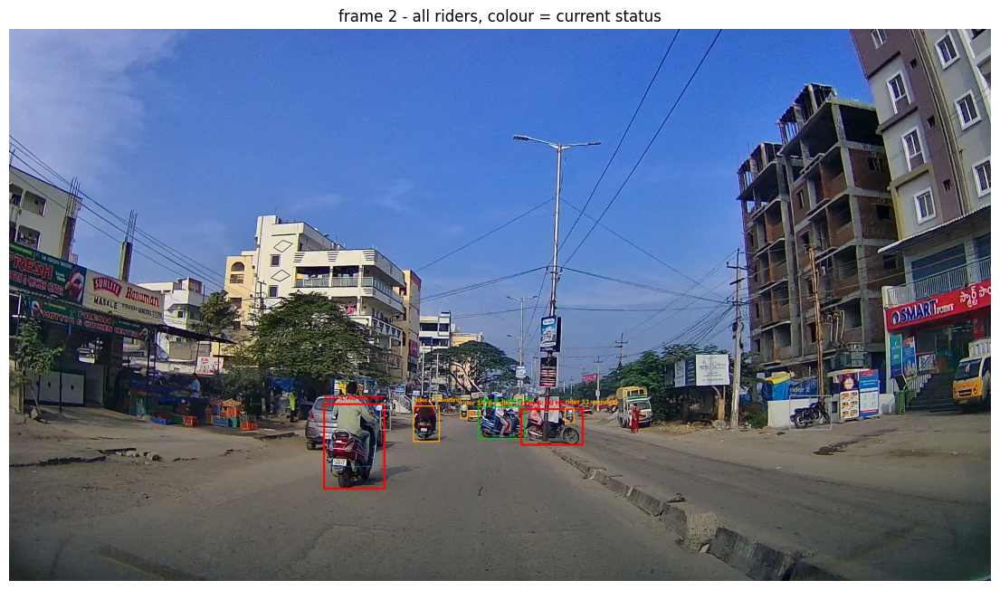
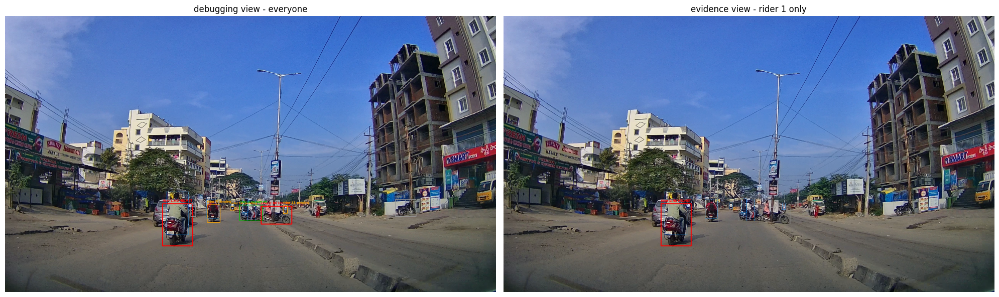

The pipeline has decided. Rider 7 was not wearing a helmet, across enough frames, with enough confidence.
Now someone has to look at it. A violation that exists only as a True in a dictionary isn’t much use : the point of this system is to produce evidence a human can review before anything becomes a ticket. This file turns pipeline state into pictures. Two functions: one crops a license plate, one draws the full frame with every rider colour-coded by status.
/content/helmet-violation-detection/project/pipeline
━━━━━━━━━━━━━━━━━━━━━━━━━━━━━━━━━━━━━━━━46.6/46.6 kB3.0 MB/s eta 0:00:00━━━━━━━━━━━━━━━━━━━━━━━━━━━━━━━━━━━━━━━━1.4/1.4 MB33.3 MB/s eta 0:00:00━━━━━━━━━━━━━━━━━━━━━━━━━━━━━━━━━━━━━━━━75.8/75.8 kB5.8 MB/s eta 0:00:00
Cropping a plate
Small function, and it exists to hand a tight image of a license plate to an OCR step later.
Padding widens the box slightly, because detection boxes tend to sit tight against the plate and OCR does better with a margin.
But a plate detected at the very edge of the frame would push the padded box outside the image. NumPy slicing doesn’t raise on out-of-range indices it silently returns a smaller array, or an empty one. The clamps keep the crop inside the frame so downstream code gets what it expects.
frame_image[y1:y2, x1:x2] is rows first, then columns: y before x. That ordering catches people out constantly, because box coordinates are written x-first.
Drawing the frame
The main function. Every rider gets a box coloured by their current status.
OpenCV drawing functions modify the array in place. Without the copy, this would scribble on r.orig_img the frame YOLO handed back and every later use of that frame would carry the annotations.
In a loop that draws several times per frame, the boxes would accumulate.
The four states, and why they’re four
The if chain is the three-valued logic from temporal.py made visible:
Colour
Meaning
is_violation
grey
seen, but no record yet
no instance
orange
tracked, still undecided
None
red
confirmed violation
True
green
confirmed compliant
False
Note it tests is True and is False explicitly, not if inst.is_violation. Since None and False are both falsy in Python, a plain truth test would paint undecided riders green showing “confirmed helmet OK” for someone the system hasn’t judged.
That would be a quiet, plausible-looking bug in a system meant to produce evidence.
OpenCV orders colour channels blue-green-red. So (0, 0, 255) is red, not blue. Anything drawn with OpenCV and displayed with matplotlib needs cv2.cvtColor(img, cv2.COLOR_BGR2RGB) first, or the colours invert.
No highlight : every rider drawn in their own status colour. This is the debugging view: what does the system currently believe about everyone in frame?
With a highlight : one rider in full colour, everyone else dimmed to thin grey with no label. This is the evidence view.
The difference matters because a snapshot attached to a ticket should be unambiguous about who it accuses. A frame with four red boxes raises the question of which one the ticket is for.
Running the pipeline
Enough state to draw something real.
from ultralytics import YOLOimport configfrom detection import get_frame_detectionsfrom association import associate_riders_to_motorcycles, associate_heads_to_ridersfrom rm_instance import RMInstanceManagerfrom temporal import smooth_helmet_status, decide_violationmodel = YOLO(config.MODEL_PATH)results = model.track( source=config.VIDEO_PATH, classes=list(config.CLASS_NAMES.keys()), tracker=config.TRACKER, persist=True, stream=True, verbose=False,)manager = RMInstanceManager()observations = {}frames = {} # keep a few frames to draw laterFRAME_LIMIT =300for i, r inenumerate(results):if i >= FRAME_LIMIT:break det, confs = get_frame_detections(r)for rider_id, moto_id in associate_riders_to_motorcycles(det["rider"], det["motorcycle"]): manager.get_or_create(rider_id, moto_id)for rider_id, (status, conf) in associate_heads_to_riders( det["rider"], det["helmet"], det["no_helmet"], helmet_confs=confs["helmet"], no_helmet_confs=confs["no_helmet"]).items(): observations.setdefault(rider_id, []).append((status, conf))for rider_id, inst in manager.instances_by_rider.items(): smoothed = smooth_helmet_status(observations, rider_id) inst.is_violation = decide_violation(smoothed)# hold on to any frame showing a mix of states states = {inst.is_violation for inst in manager.instances_by_rider.values()}iflen(states) >=2andlen(frames) <3: frames[i] = (r.orig_img.copy(), det)print(manager.summary())print("frames captured for drawing:", list(frames))
Creating new Ultralytics Settings v0.0.8 file ✅
View Ultralytics Settings with 'yolo settings' or at '/root/.config/Ultralytics/settings.json'
Update Settings with 'yolo settings key=value', i.e. 'yolo settings runs_dir=path/to/dir'. For help see https://docs.ultralytics.com/usage/settings.
requirements: Ultralytics requirement ['lap>=0.5.12'] not found, attempting AutoUpdate...
Using Python 3.13.15 environment at: /usr
Resolved 2 packages in 444ms
Prepared 1 package in 52ms
Installed 1 package in 1ms
+ lap==0.5.13
requirements: AutoUpdate success ✅ 0.8s
WARNING ⚠️ requirements:Restart runtime or rerun command for updates to take effect
{'total_instances': 39, 'confident_helmet_status': 0, 'confirmed_violations': 3}
frames captured for drawing: [2, 3, 4]
Debugging View
Everyone in their own colour.
import matplotlib.pyplot as pltframe_idx =list(frames)[0]img, det_at_frame = frames[frame_idx]annotated = draw_rm_instances(img, det_at_frame, manager.instances_by_rider)plt.figure(figsize=(14, 8))plt.imshow(cv2.cvtColor(annotated, cv2.COLOR_BGR2RGB))plt.title(f"frame {frame_idx} - all riders, colour = current status")plt.axis("off")plt.show()

Orange boxes are the interesting ones: riders the system is still watching. They may turn red or green in a later frame, or stay orange to the end of the video if the evidence never gets strong enough.
A frame like this is a snapshot of an ongoing decision, not a final answer.
Evidence View
Same frame, one rider highlighted.
violators = [rid for rid, inst in manager.instances_by_rider.items()if inst.is_violation isTrueand rid in det_at_frame["rider"]]if violators: target = violators[0] evidence = draw_rm_instances(img, det_at_frame, manager.instances_by_rider, highlight_rider_id=target) fig, axes = plt.subplots(1, 2, figsize=(20, 7)) axes[0].imshow(cv2.cvtColor(annotated, cv2.COLOR_BGR2RGB)) axes[0].set_title("debugging view - everyone") axes[0].axis("off") axes[1].imshow(cv2.cvtColor(evidence, cv2.COLOR_BGR2RGB)) axes[1].set_title(f"evidence view - rider {target} only") axes[1].axis("off") plt.tight_layout() plt.show()else:print("no confirmed violator visible in this frame - try another from `frames`")

The right-hand image is what would be attached to a ticket. One rider named, everyone else present for context but visibly not the subject.
Cropping a Plate from the Frame
plates = det_at_frame["license_plate"]if plates: pid =list(plates)[0] crop = crop_plate(img, plates[pid], padding=10)print(f"plate {pid}: box {[round(v) for v in plates[pid]]}")print(f"crop size: {crop.shape[1]} x {crop.shape[0]} px") plt.figure(figsize=(5, 3)) plt.imshow(cv2.cvtColor(crop, cv2.COLOR_BGR2RGB)) plt.title(f"plate {pid}") plt.axis("off") plt.show()else:print("no plates detected in this frame")
Plates at dashcam distance are typically a few dozen pixels wide. Whether that’s enough for OCR is the open question and one reason the OCR step hasn’t been wired in.
Try it
Break the three-valued test. Change elif inst.is_violation is False to else and redraw. Undecided riders turn green the system now shows “confirmed helmet OK” for people it hasn’t judged. This is what the explicit is comparisons are protecting against.
Swap the colours. Set violations to (255, 0, 0) and see what renders. BGR ordering means that’s blue.
Draw the whole video. Write the annotated frames to an output video with cv2.VideoWriter and watch riders change colour as evidence accumulates. Orange turning red is the temporal logic becoming visible.
Vary the padding. Crop a plate at padding=0 and padding=30. Which looks more readable?
Next
Each file so far does one job. main.py is the loop that runs all of them, frame by frame, on a real video and produces the numbers that decide whether this thing is fast enough for a Jetson.